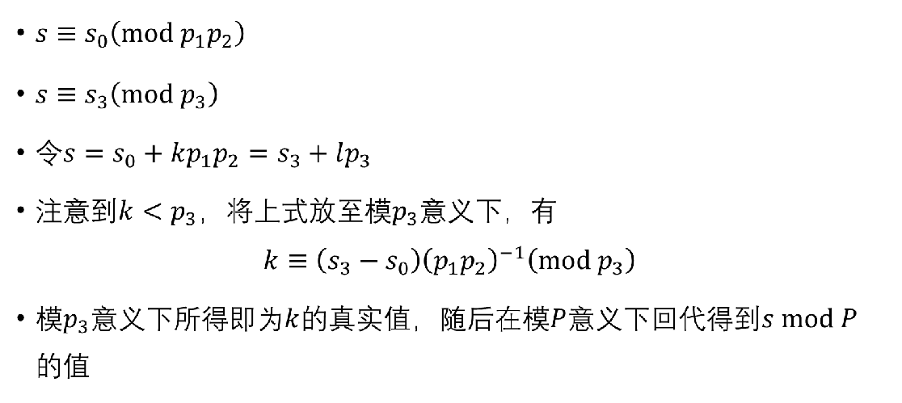

$0x01\quad \rm{Preface}$
无特别说明，本文不区分$n$和$N$两种符号，均表示形式为$2^j(j \in \mathbb{N+})$的多项式长度（或者，次数）。
我们知道，对于$FFT$而言，其得以优化成$\log$的根本原因是找到了单位复根这个东西，可以方便处理+计算。而另一种方法则是在模意义下，利用原根的美妙性质，进行多项式卷积。
$\boldsymbol{NTT~\text{(Fast Number-Theoreti Transform)}}$，快速数论变换。在分析$NTT$是如何利用原根之前，需要先分析$FFT$是如何利用的单位复根$^{[1]}$：
$\omega_n^n = 1$。
$\omega_n^1,\omega_n^2, \omega_n^3\cdots\omega_n^{n-1}$是互不相同的，这样带入计算才能保证插出一个完整的$n$次多项式。
{$\omega_n^2$} = {$\omega_{\frac{n}{2}}^{2}$}，这使得问题规模可以在计算的时候减半。
这样可以保证我们能够使用相同的方法进行逆变换。
首先，原根的基本定义：设$g$为$p$的一个原根，则满足：
换句话说$g^0,g^1,g^2\cdots,g^{p-2} \quad (\bmod p)$ 是互不相同的数，满足性质二。
同时如果我们令$p-2$作为这个群的阶，那么$g^{p-1}$和$\omega_n^n$，其实就是等价的，只不过
而已。于是就满足性质一。
而对于性质三，我们先考虑一个转化。我们如果要将$g$作为单位根的替代的话，就需要用到$g^{\frac{p-1}{N}}$。换句话说，$N | (p-1)$。那么我们便可以令$g_n^k \equiv g^{\frac{k(p-1)}{N}} (\bmod~p)$，得到一个和单位根相似的形式。
那么接下来，因为$p$是素数，所以在$g_n^n\equiv g^{\frac{N(p-1)}{N}}\equiv g^{p-1} \equiv 1 (\bmod ~p)$的基础上，我们可以得到$g_{2n}^{n} \equiv1\quad\text{or}\quad \text{-1} (\bmod~ p)$，那么平方之后性质三便显而易见；或者考虑另一种思路，我们根据刚才得出的、跟二次剩余有些相似的式子，可以得到以下结论：
再结合显而易证的消去引理$g_n^k \equiv g_{jn}^{jk}$，我们可以很自然像$FFT$证明单位复根的折半性一样，证出这个结论。
至于性质四，证明的大体相似于单位单位复根。即：
而对于$n=k$的情况，不适用于普通的几何级数求和，所以直接就是$\sum 1 =n$ 。
$0x02\quad \rm{Codes}$
呃，于是NTT就完了。注意因为要保证$N | (p-1)$，且 $N$ 是 $2$ 的幂次，所以素数 $p$ 一定要是 $k\cdot 2^j+1$ 的形式。
至于求原根，不是本界探讨的内容。普通的NTT模数，原根可以背过；其余情况暴力求+验证即可。
1 | int N, M, K, qaq ; |
其中Gi表示$998244353$的原根的逆元。
$0x03\quad \rm{Extending}$
接上节内容，$NTT$本质上是只能处理“$NTT$模数（$p=\omega\cdot 2^k+1$）”。但是当我们需要对其进行任意模数取模时，就需要我们用$CRT$合并。
然后…我也不知道从哪找到了一张比较浅显的图：
但是这个地方仍然会存在不少问题，巨佬KsCla如此解释：
具体做法是这样：先选取三个乘积在$10^{23 }$以上的便于使用NTT的模数。在这里我选的是$m_1=998244353=2^{23}∗119+1$，$m_2=1004535809=2^{21}∗479+1$，$m_3=469762049=2^{26}∗7+1$。选这三个模数的好处在于它们的原根都是3。
然后用这三个模数做NTT，可以得到以下三条式子：虽然这三条式子可以在$10^{23}$以内唯一固定$ans$的值，但问题也随之而来：$m_1∗m_2∗m_3$很大，无法直接用
long long存下，而用long double之类的则会丢失精度，所以无法用普通的$CRT$。难道要写高精度？不，有一种很妙的方法可以解决这个问题。
首先注意到这里只有三个模数，而且两个模数乘起来是不会爆long long的，所以可以先合并前两条式子。根据CRT，有：其中$Inv(x,y)$表示x关于y的逆元。
这条式子涉及到两个很大的数相乘然后再取模，而直接相乘会爆long long。可以用$O(\log(m_1m_2))$的快速乘，或者$O(1)$转double后相乘。
为了方便，把上式化成这样的形式：然后设：
接下来的部分才是精髓。我们求出$x$在$\bmod m_3$意义下的值：
在$\bmod m_3$意义下，$ym_3$被消掉了。
然后有：
算出右半部分的值为$q$，则可令$x=km_3+qx=km_3+q$。将其代入$ans=xM+C$：
也就是说：
而由于$ans∈[0,m_1m_2m_3)$，所以$k$必为0。也就是说$ans$就是$qM+C$！直接把这条式子对题面要求的模数取模即可.
嗝……其实我就是加了一遍mkd，但是也算是复习了一遍吧XD。
有一点是需要注意的：
- 为什么要选三个乘积大于$10^{23}$的质数作为模数？
- 为了是最后的结果可以不取模
嗯，然后就是板子：
1 |
|
于是这玩意儿进行了9遍NTT，那是真的慢。。。
$\rm{Reference}$
KsCla的$blog$ $^{^{[\nearrow ]}}$